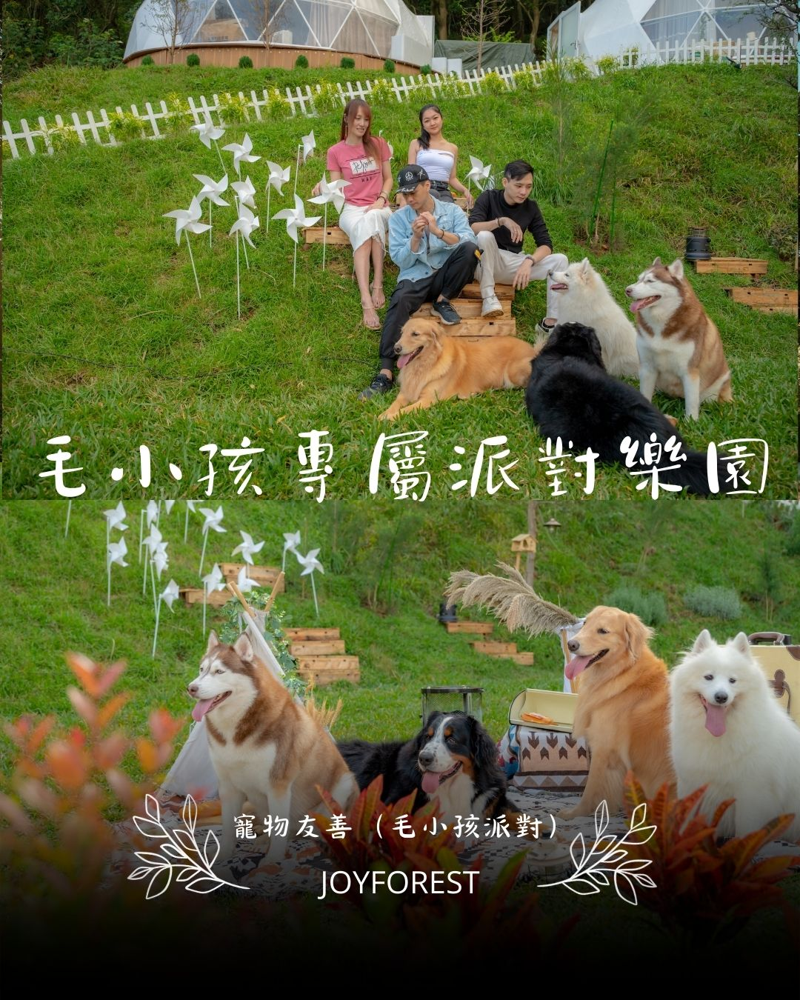

楊梅附近輕鬆出遊的露營玩法
楊梅常被當成「剛好不太遠」的出發點；真正的放鬆常來自你把目標變少。

市場比較與公開方案觀察
桃園與楊梅周邊的露營市場優勢，在於『交通半徑短、可快閃、可分眾』。對雙北與新竹旅客來說，移動時間可控，適合把兩天一夜做成高品質短假期。比較在地場域時，除了價格與房型，還要看是否能支援不同團型：情侶、親子、朋友、企業小團。
若你在意的是效率，建議看公開方案裡的『可直接入住程度』；若在意的是質感與沉浸，則要看夜間環境、活動規劃與空間私密度。第一次來桃園露營，準備上可採『都會近郊思維』：行李可精簡，但保暖、防風、防雨不能省。市場上常見的服務組合包含一泊多食、房型升級、主題活動與包場方案，挑選時要先決定你想要放鬆、拍照、還是互動型行程。
用『交通時間 + 入住摩擦成本 + 活動適配』三個指標評估，通常比單看最低價更能找到真正適合的場域。
比較前先看這四件事
- 交通效率：國道可達性與塞車風險
- 近郊兩天一夜是否能完整體驗場域價值
- 可否支援情侶／親子／朋友多團型需求
- 平假日價差與檔期公告是否透明
| 品牌／場域 | 常見公開價格帶（雙人） | 特色重點 | 適合族群 |
|---|---|---|---|
| 揪好森 Joyforest（桃園楊梅） | 依房型／檔期詢價 | 少帳包場、雙圓頂帳、森林草地與彈性活動動線 | 重視隱私、希望客製流程的小團體 |
| 朋趣 Bon Chill（桃園） | 約 NT$7,600 起（公開專案常見） | 桃園近郊可達性高，服務流程完整 | 雙北短天數旅客 |
| 桃禧漫遊渡假露營園區（桃園） | 約 NT$9,800 起（園區方案） | 園區化設備齊全，適合免裝備入住 | 重視舒適與機能者 |
| 愛上喜翁（新竹） | 約 NT$5,600～8,400（方案別） | 山景視野與活動彈性，北部移動時間可控 | 想兼顧景觀與活動安排者 |
| 自然圈農場（苗栗） | 約 NT$7,000～11,000（圈型別） | 圈區式私密感，適合小團體包圈 | 希望同團互動不被打擾者 |
以上資訊依 2026/04 公開頁面與旅遊平台可查資料整理，主要用途是協助前期篩選與行程規劃，不取代最終報價與入住條款。建議出發前 7～14 天再次確認最新公告。
參考來源：台灣觀光署、桃園觀光導覽網、TaiwanPlus YouTube。